How to Use
Here you can find information on how to use mAppWidget library and FAQ's. If you have any question or problem which is not outlined here, please submit it using our support form.
Introduction
mAppWidget is an Android library designed specifically to simplify the development of custom offline map applications. It uses tile engine for rendering the map on the screen.
Abstractions
The offline map consists of an image that is sliced into tiles. Tiles are organised into several zoom levels. Zoom levels start from 0. At 0 zoom level, the map image’s dimensions are 1x1 pixels. At each next zoom level, the image size is twice increased.
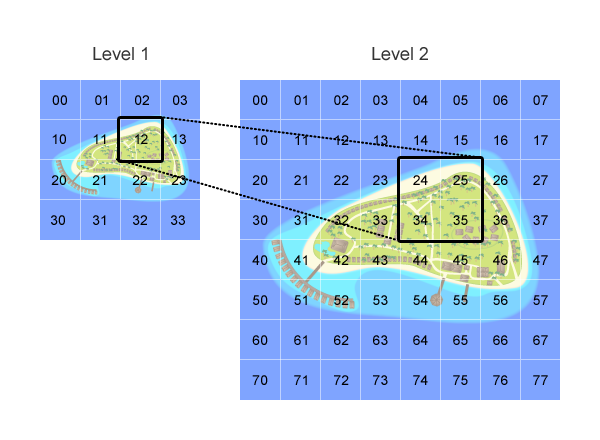
A map can have layers and map objects.
A layer is an abstraction that holds map objects. Layers can be visible or invisible. If a layer is invisible, objects that belong to this layer will not be displayed on the map.
A map object is the object that can be displayed on the map. A Drawable object is used to display it. Map objects can be added to any layer. The coordinates of the object are set in pixels.
To define an object’s location, coordinates use the image originally used for tile generation. The top left corner of the image is defined as having (0, 0) coordinates.
To define the location of a map object within the image, place the cursor at the spot and check its coordinates (you can use standard image editor). For example, point Bi n the image has coordinates of (350, 200) pixels.
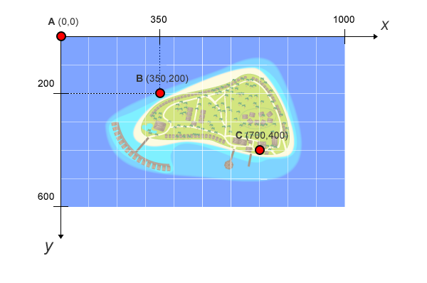
Environment Setup
First, you need to create a new project in the Eclipse development environment. The project can then be integrated into your app project by using EclipseпїЅs project management tools. A step-by-step guide below shows how to correctly create a map project.
Step 1
Create a new Android project
Step 2
Specify project details:
- Set project name
- Check ‘Create new project in workspace’ radio button
- Select Build target
- Set Package name
- Check and name Create activity
- Set Min SDK Version
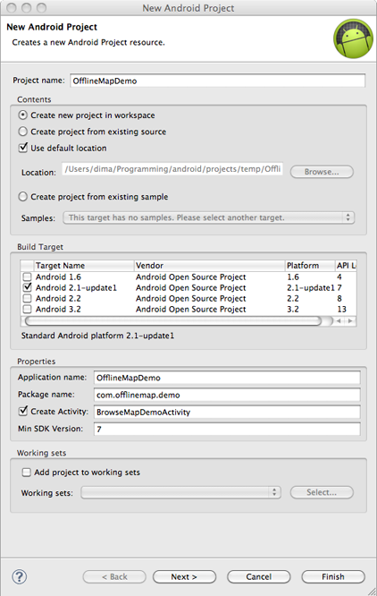
Step 3
Create ‘libs’ folder and put mapwidget_
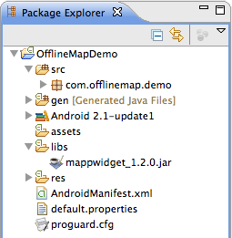
Right click on mappwidget_1.2.0.jar and select ‘Add to Build Path’
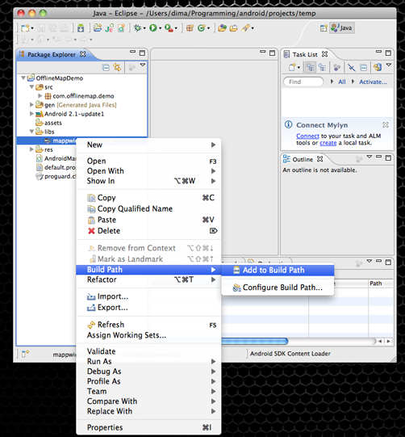
You should see mappwidget_1.2.0.jar in the ‘Referenced Libraries’ section.
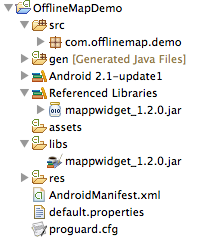
Step 4
Attach mappwidget javadoc. See “How to attach javadoc?” section for more details.
Step 5
Copy the map slices generated by the online tool to the assets folder. For more details, see the пїЅHow to create map assetsпїЅ section.
Step 6
In res/layout folder open the main.xml file in source view. Add the following element attribute to the root LinearLayout:
android:id="@+id/mainLayout"
Step 7
Open the main java class and paste the following code into onCreate:
MapWidget map = new MapWidget(this, "map"); LinearLayout layout = (LinearLayout) findViewById(R.id.mainLayout); layout.addView(map);
Step 8
Run it as an Android app.
FAQ
How to attach javadoc to the library?
Go to Project Properties → Java Build Path → Libraries. Select Javadoc location item of mappwidget jar and press “Edit...”.
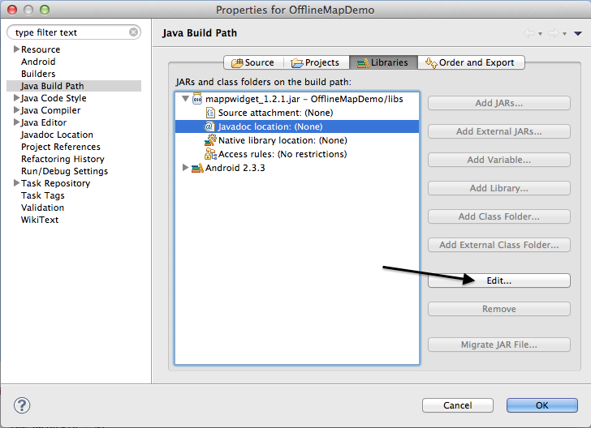
Check “Javadoc in archive” radio button.
Check “Workspace file” radio button.
Set the path to the mappwidget.jar into “Archive path” edit field.
Enter “javadoc” into the “Path within archive” edit field and press ok.
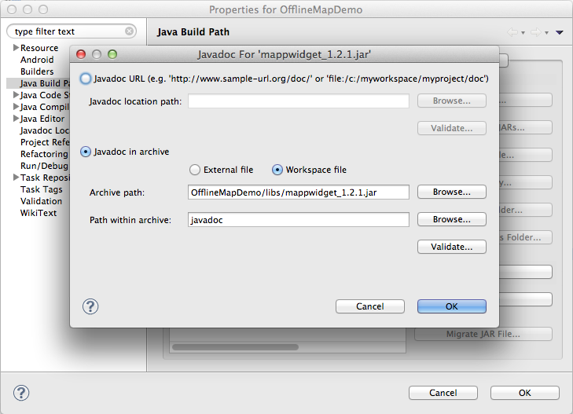
How to calibrate offline map in order to use geographic aware methods?
The main idea of calibration is to define two points in pixels and map them according to the actual positions in geographical coordinates. Let’s take the Royal Park of London as an example.
This is the original image taken from the Open Street Map service:
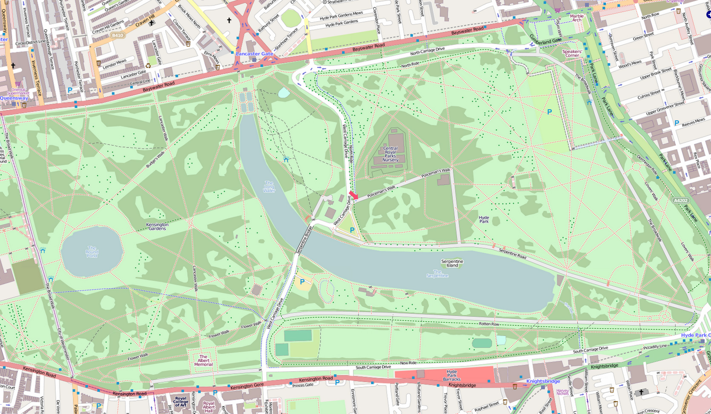
We will take two points that are pretty easy to find on Google Maps or any other map service (it may be crossroads or any other single object). We recommend using http://itouchmap.com/latlong.html service in order to have more precise latitude and longitude values.
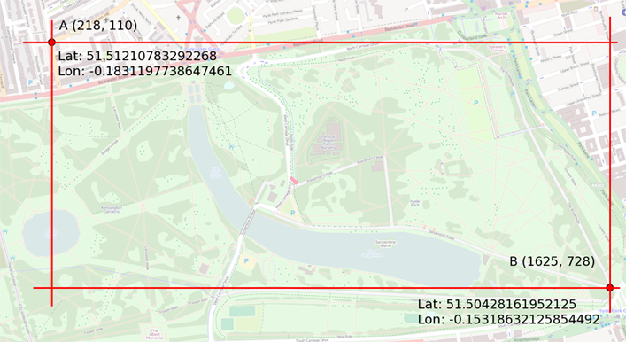
Note: Calibration rectangle can be smaller than the map image itself. Geo awareness methods will work on the entire map anyway.
Now we have two points and their location
Calibration using slicing tool
To calibrate the map, just navigate to the slicing tool web page (http://mapp.android-libraries.com/slicingtool) and fill in the GPS Positioning section of the form.
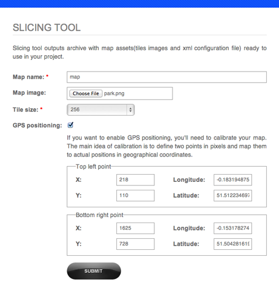
Press the “Submit” button, download the map and place under the assets folder of your project. You are done.
Manual calibration
In order to calibrate your offline map manually, you will need to make changes to the map.xml file that is located at assets/map/ folder.
Change the map.xml to match this example:
<?xml version="1.0" encoding="utf-8"?>
<image format="png" overlap="1" tilesize="256"><size height="970" width="1665">
<calibrationrect>
<point lat="51.512234697322576" lon="-0.18319487571716309" topleft="1" x="218" y="110">
<point lat="51.50428161952125" lon="-0.15317827463150024" x="1625" y="728">
</calibrationrect>
</image>
This is it.
How to create map assets?
Map assets can be generated through the online tool. The tutorial below gives step-by-step instructions on how to use the tool.
- Prepare the map source image.
- Open browser and navigate to http://mapp.android-libraries.com/slicingtool/
- Log in using credentials provided to you by e-mail.
- Select the tile size (256 is recommended).
- Enter the name for your map.
- Upload the map source image.
- Enter calibration data if you want to use GPS features of the map. (For more details see How to calibrate offline map in order to use geographic aware methods? section)
- Click the ‘Submit’ button.
- Download and extract assets archive.
Copy the content of the archive to the assets folder. You should have the following structure:
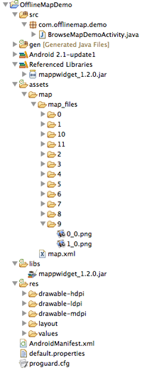
Map assets has such structure:
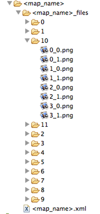
Folder names under <map_name>_files stand for zoom level. 0 is the lowest and 11 is the highest zoom level for the image. The highest zoom level holds your original image sliced to tiles. Each file name of any tile is created using the next pattern: <column number>_<row number>.png
<map_name>.xml is the configuration file for offline map.
How to display map object on the map?
In order to display a point of choice, you will need to complete these steps:
- Create a new layer or get an existing one.
- Create a map object which represents your point of choice.
- Add the map object to the layer.
Creating a new layer
In order to create a layer, use this code snippet:
int COFFEE_SHOPS_LAYER = 1; Layer layer = mapWidget.createLayer(COFFEE_SHOPS_LAYER);
Getting an existing layer by id or index
int COFFEE_SHOPS_LAYER = 1; Layer layer = mapWidget.getLayerById(COFFEE_SHOPS_LAYER);
Enumerating all existing layers
int layerCount = mapWidget.getLayerCount();
for (int i=0; i<layerCount; ++i) {
Layer layer = mapWidget.getLayer(i)
}
How to display map object using the geographic coordinates?
In order to place the map object at some specific geographical location, you will need to:
- create a map object;
- add the map object to the layer (at any position);
- move the object using MapObject.moveTo (Location location) method.
Example:
private void addPOI()
{
Layer layer = map.getLayerById(SPORTS_LAYER);
int objectId = 0;
Drawable drawable = getResources().getDrawable(R.drawable.poi_sports);
MapObject poiSport = new MapObject(objectId,
drawable,
0, 0, // Coordinate in pixels
11, 33, // Pivot point
true, // Touchable
true); // Scalable
layer.addMapObject(poiSport);
Location location = new Location("");
location.setLatitude(51.50844864450185);
location.setLongitude(-0.16513824462890625);
// It is obligatory to add map object to the layer before calling
// moveTo mtehod
poiSport.moveTo(location);
objectId += 1;
}
How to get user’s position?
You have two options for determining the current user’s position.
- Use Android’s standard way
- Set listener to the MapWidget.
Standard way
This code should be used in your Activity:
LocationManager locManager = (LocationManager)
getSystemService(Context.LOCATION_SERVICE);
locManager.requestLocationUpdates(LocationManager.GPS_PROVIDER, MIN_TIME,
MIN_DISTANCE, new LocationListener() {
public void onStatusChanged(String provider, int status, Bundle extras) {
}
public void onProviderEnabled(String provider) {
}
public void onProviderDisabled(String provider) {
}
public void onLocationChanged(Location location) {
// Handle location change here
}
});
Set listener to MapWidget
MapWidget uses Network location provider in order to get location immediately, and uses GPS location provider when it is ready.
This is an example of how to set the listener:
private void initListeners()
{
mapWidget.setOnLocationChangedListener(new OnLocationChangedListener() {
public void onLocationChanged(MapWidget v, Location location) {
Layer layer = v.getLayerById(LAYER_ID);
MapObject object = layer.getMapObject(OBJECT_ID);
object.moveTo(location);
}
});
}
Also, you may want to configure the location request interval. You can do that by using the next code snippet:
private void configureMapWidget()
{
GPSConfig gpsConfig = mapWidget.getGpsConfig();
gpsConfig.setGPSUpdateInterval(MIN_TIME_INTERVAL, MIN_DISTANCE_IN_METERS);
}
How to handle touch events on the map objects?
In order to receive touch events, you need to set OnMapTouchListener.
Example:
private void initMapEventsListener()
{
mapWidget.setOnMapTouchListener(new OnMapTouchListener() {
public void onTouch(MapWidget map, MapTouchedEvent event) {
List objectTouchEvents = event.getTouchedObjectIds();
// X coordinate of the touch in original image coordinates
int mapX = event.getMapX();
// Y coordinate of the touch in original image coordinates
int mapY = event.getMapY();
// X coordinate of the touch in screen coordinates
int screenX = event.getScreenX();
// Y coordinate of the touch in screen coordinates
int screenY = event.getScreenY();
if (objectTouchEvents.size() == 1) {
ObjectTouchEvent objectTouchEvent = objectTouchEvents.get(0);
// Id of the layer that the map object belongs to
long layerId = objectTouchEvent.getLayerId();
// Id of the map object that was touched.
Object objectId = objectTouchEvent.getObjectId();
Toast.makeText(BrowseMapDemoActivity.this, "Touched object " + objectId + " on layer" + layerId + ", x: " + mapX + " y: " + mapY, Toast.LENGTH_SHORT).show();
}
}
});
}
How to perform some actions before and after zoom has occurred?
In order to perform an operation before or after zooming, you can add instance of MapEventsListener to the MapWidget. Use MapWidget.removeMapEventsListener to remove the listener from the mApp widget.
For example:
mapWidget.addMapEventsListener(new MapEventsListener() {
public void onPreZoomOut() {
// You can hide your map object's pop-up here
}
public void onPreZoomIn() {
// You can hide your map object's pop-up here
}
public void onPostZoomOut() {
}
public void onPostZoomIn() {
}
});
How to scroll the map to some location?
You can do this by using one of these methods:
- MapWidget.scrollMapTo(android.location.Location location);
- MapWidget.scrollMapTo(android.graphics.Point position); MapWidget.scrollToCurrentLocation();
- MapWidget.jumpTo(android.location.Location location);
- MapWidget.jumpTo(android.graphics.Point position); MapWidget.jumpToCurrentLocation();
- scrollXXX methods use animation in order to scroll the map to a specific location.
- jumpXXX methods do not use animation.
Your map should be calibrated in order to use methods that receive android.location.Location as a parameter. Otherwise an exception will be thrown.
How to show current user’s location?
To show the current user’s location, you should follow these steps:
- Add ACCESS_COARSE_LOCATION and ACCESS_FINE_LOCATION permissions to the AndroidManifest.xml
- use mapWidget.setShowMyPosition(true) in order to show the current user’s position
As a result, you should see the position marker on the map:
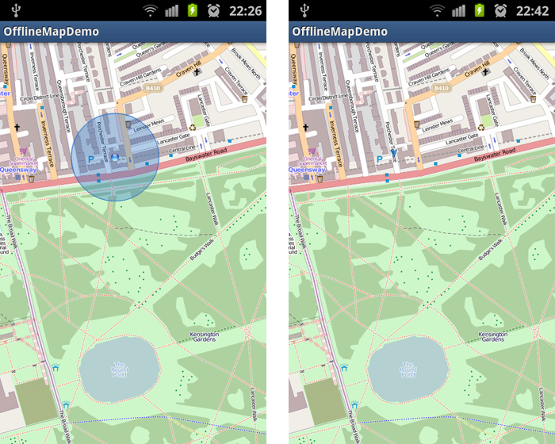
How to change the way in which location pointer is pointing?
The location marker consists of a round pointer, arrow pointer, accuracy area and accuracy area’s border. You can change each element of the marker.
In order to do that, you will need to take these steps:
- Get two images: round_pointer.png()and arrow_pointer.png().Please note that the arrow should face North in order to show the correct user’s direction.
- Put the images into res/drawable folder.
- Use the configureLocationPointer() code snippet to change the pointer’s view:
private void configureLocationPointer()
{
MapGraphicsConfig graphicsConfig = map.getMapGraphicsConfig();
graphicsConfig.setAccuracyAreaColor(0x55FF0000); //Transparent Red
graphicsConfig.setAccuracyAreaBorderColor(Color.RED);
graphicsConfig.setDotPointerDrawableId(R.drawable.round_pointer);
graphicsConfig.setArrowPointerDrawableId(R.drawable.arrow_pointer);
}
If everything goes well, you should get something like this:
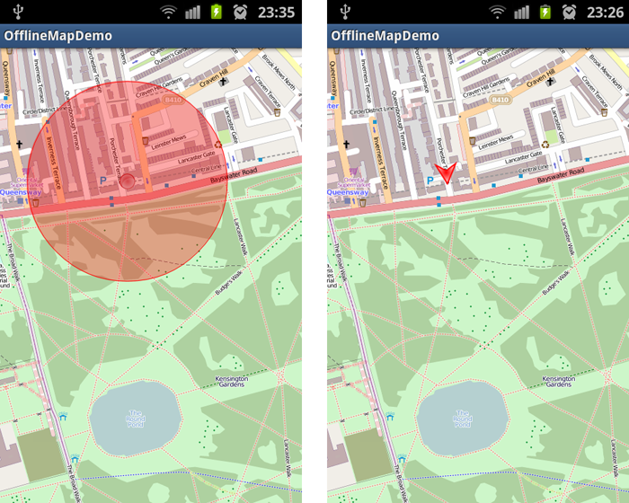
The arrow pointer is displayed if bearing information is available, round pointer is used in all other cases.
Accuracy area shows accuracy of the GPS location calculation.
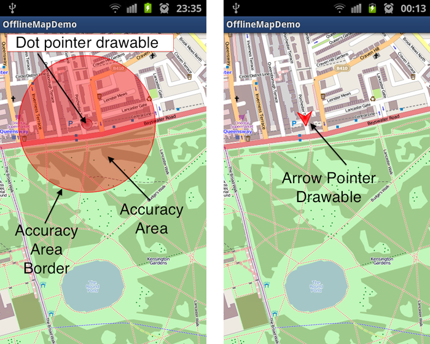
How to show/hide map objects of any type?
To show or hide map objects, you will need to place them into separate layers. Then just set layer visibility to true or false.
Example:
Layer sportsLayer = mapWidget.getLayerById(SPORTS_LAYER); sportsLayer.setVisible(true); // Shows the layer sportsLayer.setVisible(false); // Hides the layer
How to use more than one map in a single application?
Navigate to the slicing tool web page and create a map with a different name and put it in the assets folder.
The result should look like this:
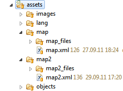
In the code, you will be able to use your maps in the following way:
map = new MapWidget(this, "map", initZoomLevel); or map = new MapWidget(this, "map2", initZoomLevel);
How to zoom in/out?
There are several methods of zooming in and out available by default. There are:
- Default zoom buttons at the bottom of the widget.
- Double tap on the widget.
- Pinch gesture.
- Hardware buttons, ‘I’ for zoom in and ‘O’ for zoom out (only if the device has hardware keyboard).
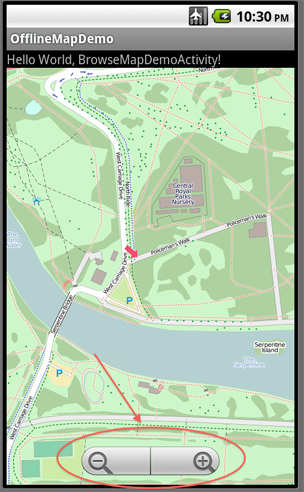
Also, you can implement your own buttons in order to zoom in/out.
In order to zoom in by one zoom level, call:
mapWidget.zoomIn();
In order to zoom out by one zoom level, call:
mapWiget.zoomOut();
In order to retrieve the current zoom level, call:
mapWidget.getZoomLevel();
Initial zoom level is set via MapWidget’s constructor. For example, in order to set initial zoom level to 11, use:
int initialZoomLevel = 11; MapWidget mapWidget = new MapWidget(this, "map", initialZoomLevel);
What to do when user has touched more than one map object at a time?
In this case, the best option is to show a dialog box with a list of objects that a user has touched. For that, you will need to implement OnMapTouchListener properly.
Please, refer to this example of how to do this:
mapWidget.setOnMapTouchListener(new OnMapTouchListener() {
public void onTouch(MapWidget map, MapTouchedEvent event) {
List objectTouchEvents = event.getTouchedObjectIds();
// X coordinate of the touch in original image coordinates
int mapX = event.getMapX();
// Y coordinate of the touch in original image coordinates
int mapY = event.getMapY();
// X coordinate of the touch in screen coordinates
int screenX = event.getScreenX();
// Y coordinate of the touch in screen coordinates
int screenY = event.getScreenY();
if (objectTouchEvents.size() == 1) {
ObjectTouchEvent objectTouchEvent = objectTouchEvents.get(0);
// Id of the layer that the map object belongs to
long layerId = objectTouchEvent.getLayerId();
// Id of the map object that was touched.
Object objectId = objectTouchEvent.getObjectId();
// Handle single object touch event here
} else if (objectTouchEvents.size() > 1) {
List